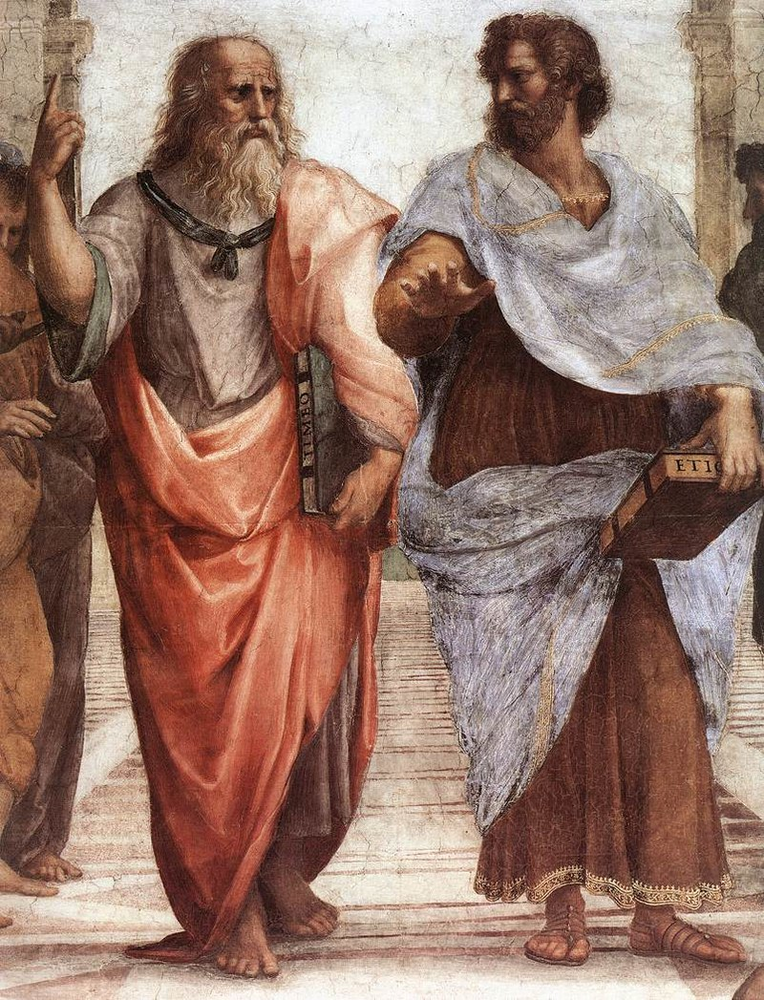
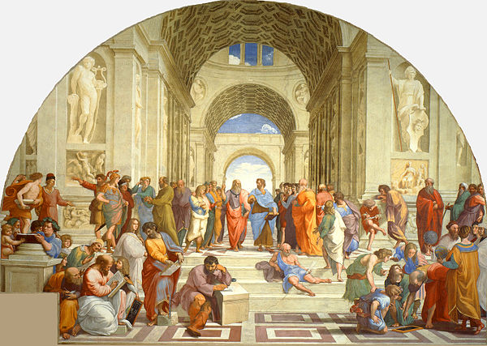

Философията (от гръцки: φιλοσοφια, от φιλεῖν – обичам и σοφία – мъдрост) е
изследване на общите и фундаментални въпроси, засягащи човека и света.
Основни теми за философията са неща като съществуването, мисленето,
познанието, истината, справедливостта, красивото. В своите изследвания
философията по принцип се отличава със систематичен подход и рационална
аргументация, което я отличава от други подходи към същите или подобни
теми, като например мистицизма и митологията.
Въпреки общото разбиране, че философията е наука, тя се различава от хуманитарните и природните науки по това, че не разчита на научния метод и няма строго определен и общоприет предмет. В зависимост от дефиницията за такъв предмет или от акцентите и подходите при изследването и решаването на този проблем, различните философи могат да бъдат причислявани към дадено течение или доктрина, а тяхната дейност и произведения да бъдат отнасяни към по-тесни области на философско изследване.
Философията може да бъде описана по много начини. Трудно е да се даде универсална дефиниция – толкова голямо е богатството и разнообразието й. “Философия” е гръцка дума – φιλοσοφια. Тя произлиза от думите φιλεῖν — обичам и σοφία — мъдрост. Или, в буквален превод, философия означава “любов към мъдростта”. Любовта към мъдростта на свой ред означава, че философията изучава знанието. Една малко по-задълбочена дефиниция би звучала така: “Философията е дисциплина, свързана с въпросите за живота.
Даването на изчерпателен списък на клоновете на философията е трудно, доколкото в различни исторически периоди и в различни културни традиции са съществували различни видове деления. Въпреки това, следните области обикновено се приемат за основни:
• Метафизиката изследва природата и първоначалата на съществуващото и света.
• Онтологията, понякога считана за основен дял на метафизиката, е изследване на битието.
• Епистемологията изследва познанието, същността и възможността на познавателния процес.
• Етиката или „философия на морала“ се интересува от въпросите как трябва да постъпва човек, правилното поведение и „добрия живот“.
• Политическата философия изучава управлението и отношението на индивидите и общностите към държавата.
• Естетиката се занимава с красивото, възвишеното, изкуството, насладата.
• Логиката изследва формите и законите на мисленето; валидните форми на аргументация.
• Философията на езика изследва началата, развитието и употребата на езика и отношението му към мисленето.
• Повечето академични дисциплини имат „философии“, които изследват техните основания и предмет.
• Същевременно множество академични дисциплини като психологията, антропологията, физиката и т.н.
Аналитична философия
Античната философия обхваща период от около едно хилядолетие, от 6 век пр.н.е. до към края на 4 век. Досократическия период е предимно набор от различни натурфилософии. Тук са първите опити да се мислят всеобщността и първоначалата на съществуващото. Класическият период, в който основни фигури са Сократ, Платон и Аристотел, се отнася най-общо до времето на разцвета и западането на атинската демокрация. През последвалия елинистически период се оформят по-отчетливо отделните философски школи и доктрини през Античността, някои сред които са стоицизъм, скептицизъм и неоплатонизъм. Късният неоплатонизъм и ранните християнски философи като Августин и Боеций ознаменуват прехода от античната към средновековната философия.
------------>Подробно описание<------------
Средновековна философия
Тук най-общо се включва философията в периода между падането на Западната Римска империя и Ренесанса. Философията е дълбоко обвързана с религията. Благодарение най-вече на ислямски преводи и коментари, по-късната християнска средновековна схоластика преоткрива класическата гръцка философия.
------------>Подробно описание<------------
Философия на Новото време
Първият период на модерната философия започва през 17 век и обхваща времето между Рене Декарт и Имануел Кант. Той най-общо се припокрива с Просвещението. Един от основните дебати тук е между рационализъм и емпиризъм. Силно влияние оказва възраждането на науките и най-вече развитието на физиката. Важни имена през тази епоха са Декарт, Монтен, Бейкън, Лок, Бъркли, Хюм, Спиноза, Лайбниц. В края на 18-и и началото на 19 век е периодът на Класическата немска философия в лицето на Кант, Фихте, Шелинг и Хегел. Значими течения по-нататък през този век са младохегелианството, марксизмът, позитивизмът, прагматизмът и ранният екзистенциализъм, към който често са причислявани Киркегор и Ницше. По същото това време Михаил Бакунин, Пиер-Жозеф Прудон и Пьотър Кропоткин поставят началото на съвременната анархистическа философска школа.
------------>Подробно описание<------------
 Резултатите от философските постижения на дадено общество оказват силно влияние на неговото развитие. Това е непосредствено видимо за области като етиката и политическата философия. Изследванията и ученията на Конфуций, Авероес, Макиавели, Лок, Русо, Маркс и Мил са само някои примери за философии, които са били определящи за държавното управление и политическите процеси в съответните епохи и общества. Философията през вековете има силно влияние върху образователните институции и практики. През Античността множество философи откриват свои образователни школи, най-известни от които са Академията на Платон и Ликейонът на Аристотел. В началото на 19 век работата на Шелинг, Шлайермахер, Хумболт и Фихте става теоретическата основа на класическия немски университет. Концепцията за прогресивното образование, най-вече чрез философията на Джон Дюи, има значително влияние върху образователните политики през 20 век в Съединените щати. По-късно основни принципи на прогресивното образование са доразвити във философията с деца. Към края на 20 век паралелно в Западна Европа и в Съединените щати започват да възникват практики на философско консултиране, както и организации, които обединяват и сертифицират философски консултанти. По-опосредствен начин на приложение на философията е чрез използване на нейните резултати в други академични и научни дисциплини. Примери за това са значението на логиката в математиката, лингвистиката, психологията и компютърните науки или определящата роля на философията на науката по отношение на научната методология.